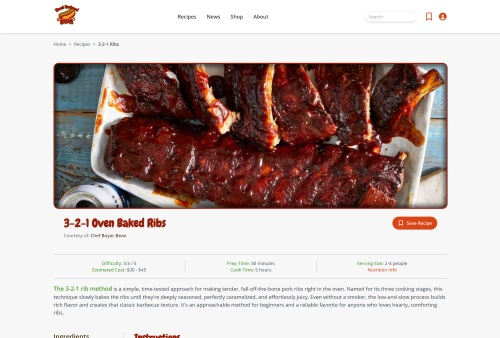

Recipe Page
Individual Project
Fully-responsive webpage outlining an oven-baked reibs recipe. Developed the design, functionality, typography, and content.

Discoving Monarchs
Developer
Designed and constructed a microsite based on the creative directors idea and goals. Fully responsive and fully functional, multi-page site.

NBA MVP's
Creative Director
Oversaw the design and creative direction of the project. Gave guidance on visual elements and UX execution.